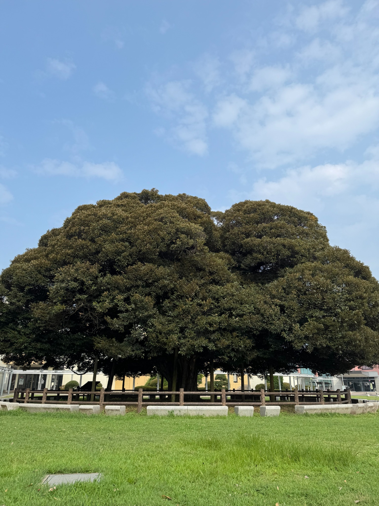

01. 業務棚卸フェーズ
現状の業務の流れ、時間がかかっている作業、困りごとを一つずつ整理します。まとまっていない課題でも構いません。
事業者向け / AI導入伴走支援 / 城里町
AIを教えるだけではありません。業務を一緒に整理し、 必要に応じてホームページや業務アプリまで実際に作ります。 業務の棚卸しからAI導入・運用の定着まで、お助けAI城里センターが一気通貫で伴走します。

こんなお悩みに
Services
中心となるのは、城里町および周辺地域の中小企業・個人事業主向けの「AI導入伴走支援」です。AIの使い方講座やアドバイスだけのコンサルティングではなく、業務の棚卸しから運用・定着まで一気通貫で伴走します。
現状の業務の流れ、時間がかかっている作業、困りごとを一つずつ整理します。まとまっていない課題でも構いません。
棚卸した内容をもとに、どこにAIやツールを組み込むと効果が出るかを設計します。優先順位も一緒に決めます。
設計した内容を、実際に手を動かして形にします。AIの導入・設定に加え、必要に応じて簡易ホームページや簡易業務アプリも制作します。
導入して終わりにせず、実際の運用を見ながら改善サイクルを回し、現場に定着するまで伴走します。
業務改善に必要と判断した場合は、伴走支援の中で簡易ホームページや簡易業務アプリを制作します。制作そのものが目的ではなく、AI導入と業務改善を形にするための手段です。
事業紹介・サービス紹介・会社や店舗の情報・お問い合わせなどを中心とした小規模なホームページです。
一つの業務課題を解決するための小規模なWebアプリです。たとえば次のような業務に対応します。
Why Us
スピードだけでなく、現場で使える形に落とし込む進め方を大切にしています。
資料をまとめて終わりにはしません。設計した内容を実際に形にするところまで担当するのが、当センターの伴走支援です。
単発の依頼ではなく、月額契約で継続的に伴走することで、現場に定着するまで責任を持って進められます。
数を追わず、契約いただいた事業者にじっくり向き合える範囲でお受けしています。密度の高い伴走を大切にしています。
城里町を拠点に、訪問して現場の状況を見ながら進めます。オンラインだけでは分からない実情を踏まえて提案します。
Flow
初めての事業者の方でも進め方が分かるよう、問い合わせから伴走開始までの流れを明確にしています。
LINE・電話・メールでご連絡ください。課題がまとまっていなくても、今困っていることだけで大丈夫です。
訪問して現状の業務や課題を伺います。この段階では費用はかかりません。
診断内容をもとに、伴走支援の範囲・進め方をご提案します。ご納得いただいたうえで契約を結びます。
設計・実装・定着まで継続的に伴走。定期的な訪問・相談で進捗を確認しながら進めます。
Pricing
中心となるのはAI導入伴走支援です。簡易ホームページ・簡易業務アプリは、伴走支援の中で必要に応じて制作し、伴走料金に含みます。ホームページ・業務アプリ単体でのご依頼も承ります。
メインサービス
業務の棚卸し → 改善方法の設計 → AI導入 → 必要なツールの実装 → 運用・定着まで一気通貫で伴走します。
通常 月額150,000円
現在月額50,000円
最低契約期間：3か月（以降は月単位で更新）
※期間限定の特別価格です。提供期間は定めておらず、予告なく通常価格に戻す場合があります。
伴走支援をご契約でない場合の基本料金です。
ホームページ単体
事業紹介・サービス紹介・会社や店舗の情報・お問い合わせなどを中心とした小規模なホームページ
更新機能・予約機能・特殊なデザイン・多数のページ・その他個別機能が必要なホームページ
業務アプリ単体
一つの業務課題を解決するための小規模なWebアプリ（顧客管理・日報入力・見積書作成など）
複雑なデータベース・多数の利用者・複雑な権限管理・外部システムやAPIとの高度な連携・決済機能・大規模な業務システムなど
伴走期間中に制作した簡易ホームページ・簡易業務アプリを契約終了後も継続してご利用いただく場合は、通常の運用・保守契約へ移行します。
ホームページとアプリの両方をご利用の場合は、お問い合わせください。
伴走契約以外のご相談（単発のITまわりのご相談・書類作成など）も承ります。内容を伺ったうえで個別にご案内しますので、まずはお問い合わせください。
初回のヒアリング・業務診断は無料です。課題がまとまっていなくても、今困っていることをお聞かせください。
FAQ
初めての事業者の方が不安に感じやすい点をまとめています。
はい。AIは主にこちら側で活用するため、お客様が操作を覚える必要はありません。業務内容に応じて、必要なところだけ分かりやすくご説明します。
もちろんです。ひとりで運営している個人事業主や、少人数の事務所・店舗・作業場からのご相談を想定しています。
大丈夫です。初回のヒアリング・業務診断は無料です。まずは「どこに時間がかかっているか」「何を改善したいか」を整理するところから始められます。
重要な情報の扱いは事前に確認し、AIや外部サービスへ入力しない方がよい情報・取り扱い注意点を共有した上で進めます。不安がある場合は別の方法をご提案します。
中心となるAI導入伴走支援は通常月額150,000円ですが、現在は期間限定の特別価格として月額50,000円でご提供しています（最低契約期間3か月。提供期間は定めておらず、予告なく通常価格に戻す場合があります）。必要に応じた簡易ホームページ・簡易業務アプリの制作も伴走料金に含みます。初回のヒアリング・業務診断は無料です。単発のご相談は個別対応となります。
はい。簡易ホームページは初期構築費50,000円〜・運用保守月額5,000円、簡易業務アプリは初期構築費100,000円〜・運用保守月額10,000円が基本料金です。更新機能・予約機能や高度な連携などが必要な場合はオーダーメイド（ホームページ150,000円〜、業務アプリ200,000円〜・いずれも要見積り）となります。
伴走契約中は、制作した簡易ホームページ・簡易業務アプリの運用・保守料金はかかりません。契約終了後も継続してご利用いただく場合は、通常の運用・保守契約（簡易ホームページ月額5,000円、簡易業務アプリ月額10,000円）へ移行します。両方をご利用の場合はお問い合わせください。
運用・保守契約を終了した場合は、ホームページまたはアプリの公開・サービス提供も終了します。他社やお客様へのシステム移管は原則として行っておらず、ソースコードやシステム本体は移管の対象外です。アプリ内にお客様が登録・蓄積した業務データについては、ご希望に応じてCSV等の一般的な形式でお返しします。
Contact
LINE・電話・メールからご連絡ください。事業所名・訪問先・相談内容が分かるとスムーズです。
【事業所名 / お名前】 【ご連絡方法】電話 / メール / LINE 【訪問先（事務所・店舗・作業場の住所目安）】 【相談したい業務内容】 【希望日時】 【補足】